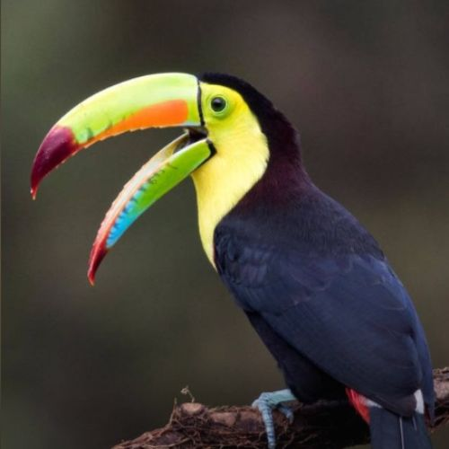

Selva Lacandona
La Selva Lacandona está ubicada en el estado de Chiapas, México. La región está poblada por el pueblo maya lacandón, de ahí su nombre. La Selva Lacandona, es una región selva tropical húmeda; la más biodiversa del país que alberga el 15% de la flora, el 33% de las especies de aves, 11% de anfibios y reptiles, el 25% de los mamíferos, el 40% de las mariposas diurnas y 13% de peces de agua dulce. Además, aquí se encuentran algunas de las ultimas poblaciones viables de especies emblemáticas en peligro de extinción, como son el jaguar, el pecarí de labios blancos, el tapir centroamericano, la guacamaya roja y la tortuga blanca. Esta región constituye una zona prioritaria de recarga de agua dulce, ya que se encuentra en la cuenca del río Usumacinta. La localización se comunica por medio de la carretera fronteriza a la ciudad de Palenque y de esta se desprenden ramales hacia los poblados..
La selva posee condiciones climáticas húmedas, cálidas y semicálidas, predominando el clima cálido húmedo con una temperatura media anual superior a los 22 °C, con baja oscilación térmica anual. Las lluvias alcanzan valores anuales superiores a los 1500 mm y pueden llegar hasta los 3000 mm en la zona norte. En los lugares de mayor altitud, se localiza el tipo climático semicálido, el más fresco de los cálidos, con una temperatura media anual inferior a los 22 °C, sin descender de los 18 °C, con este tipo climático se encuentra asociado el bosque de pino-encino.
Árbol de hasta 25 metros de altura, con el tronco recto de hasta 1.5 metros de diámetro a la altura del pecho, presentando contrafuertes bien formados, la copa es frondosa, abierta en forma de abanico; Flores pequeñas de color verde amarillentas, florea de mayo a junio; los frutos son capsulas leñosas, ovoides de color moreno-rojizo de 12 a 18 cm. de largo y 8 cm. de ancho.
Puede crecer hasta 70 metros de altura y alcanzar un diámetro de tres metros. Su generosa copa crece formando diversos “pisos” de ramas y hojas, y sus flores de carnosos pétalos despiden un peculiar perfume. También son notorias sus magníficas raíces, que se encajan en el suelo caprichosamente, exhibiendo la potencia de su anclaje. En muchas comunidades, la ceiba es apreciada por sus cualidades medicinales. Tradicionalmente se utilizan la corteza, las hojas y tallos para curar heridas y tratar el acné, además de usarse para aliviar síntomas de reumatismo, enfermedades intestinales, inflamación, dolor de muelas, quemaduras y salpullido. Pero sobre todas las cosas, se trata de un árbol sagrado.
El mamey es similar en apariencia a la magnolia; puede alcanzar más de 20 metros de altura en zonas tropicales; la copa es piramidal, de follaje denso, y el tronco (de fuste recto) está cubierto por corteza áspera de color marrón-grisáceo. Ramillas con látex amarillento. Las hojas son gruesas y de textura coriácea, con el haz de color verde oscuro y el envés más pálido. Son opuestas, simples, de forma elíptica; alcanzan de 15 a 25 cm de longitud y 5 a 10 cm de ancho. Como en el magnolio, están orientadas hacia arriba. Las flores son muy vistosas y fragantes, de color blanco; aparecen solitarias o en racimos de dos o tres unidades. Miden 2 a 2,5 cm de diámetro. El árbol puede ser dioico o hermafrodita indistintamente.
Es un árbol perennifolio, de un gran porte, de 25 a 35 m de altura con un diámetro de hasta 1.25 m. Hojas dispuestas en espiral, aglomeradas en las puntas de las ramas, simples, elípticas a oblongas, margen entero. Tronco recto, acanalado en la parte inferior. Corteza profundamente fisurada, formando piezas más o menos rectangulares, con un abundante exudado lechoso blanco y pegajoso, muy amarga y astringente. Flores solitarias axilares, a veces aglomeradas en las puntas de las ramas, dulcemente perfumadas; sépalos pardo-verdosos, corola tubular de color blanco. Fruto tipo baya de 5 a 10 cm de diámetro, cascara café y áspera, pulpa carnosa y jugosa, muy dulce.

Importante pulmón del planeta, esta área natural es el hogar de más de 70 especies de mamíferos y más de 300 de aves. Entre los animales más destacados que podemos mencionar de esta región están 70 especies de mamíferos; el jaguar (Panthera onca), el ocelote (Felis pardalis), el mono sarahuato (Alouatta palliata) y el mono araña (Ateles geoffroyi). También habitan 306 especies de aves; la guacamaya roja (Ara macao), el tucán real (Ramphastus sulfuratus) y el de collar (Pteroglosssus torquatus) y una gran cantidad de reptiles, como la nauyaca, la boa constrictor y las coralillo, además de anfibios e insectos. La fauna de la Lacandona es rica en especies endémicas de Chiapas.
| MAMIFEROS | |
 |
|
| AVES | ||
|  | ||
| REPTILES | ||
 |
||